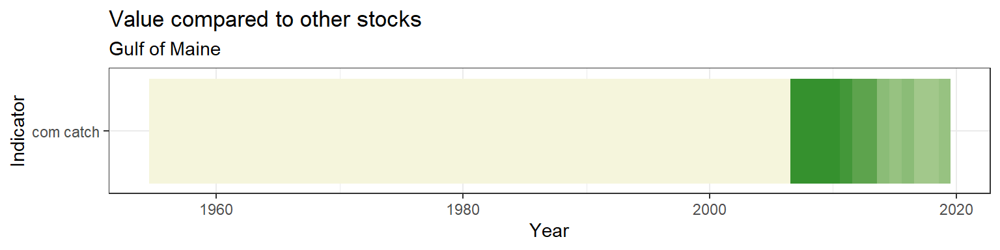

3.1 Length
Length data were pulled from survdat. Only years with more than 10 fish lengths were considered for analysis.
3.1.1 Figures
Separate geom_gls() functions were fit for the minimum, mean, and maximum lengths; trend lines are only shown when the trend was statistically significant, so some plots may have fewer than three trend lines. Please note, sometimes the survey observed a small number of fish outside of the defined stock area.
Figure 3.1: Smooth skate

Figure 3.2: Smooth skate
Risk
See Methods for risk calculation details.
Rank of change compared to historical, ranked among stocks

Figure 3.3: Smooth skate
Rank of value (magnitude) compared to other stocks

Figure 3.4: Smooth skate
Rank of value (magnitude) within a single stock, compared to all years

Figure 3.5: Smooth skate
3.1.2 Summary
| Season | Region | Mean value +- SD (n fish, n years) | Mean value +- SD (n fish, past 5 years) | Range (total) | Range (past 5 years) |
|---|---|---|---|---|---|
| FALL | all | 38.09 +- 14.59 (8,064, 55) | 39.37 +- 13.16 (2,378, 5) | 7 - 73 | 7 - 66 |
| FALL | Outside stock area | 34.61 +- 14.15 (77, 4) | 31 +- 7.5 (19, 1) | 11 - 72 | 11 - 46 |
| SPRING | all | 36.9 +- 14.21 (8,417, 52) | 37.47 +- 12.99 (2,327, 5) | 6 - 69 | 8 - 64 |
| SPRING | Outside stock area | 41.25 +- 13.84 (89, 5) | 36.74 +- 13.87 (53, 3) | 8 - 62 | 8 - 61 |
3.1.3 Data
(#fig:length_data)Smooth skate